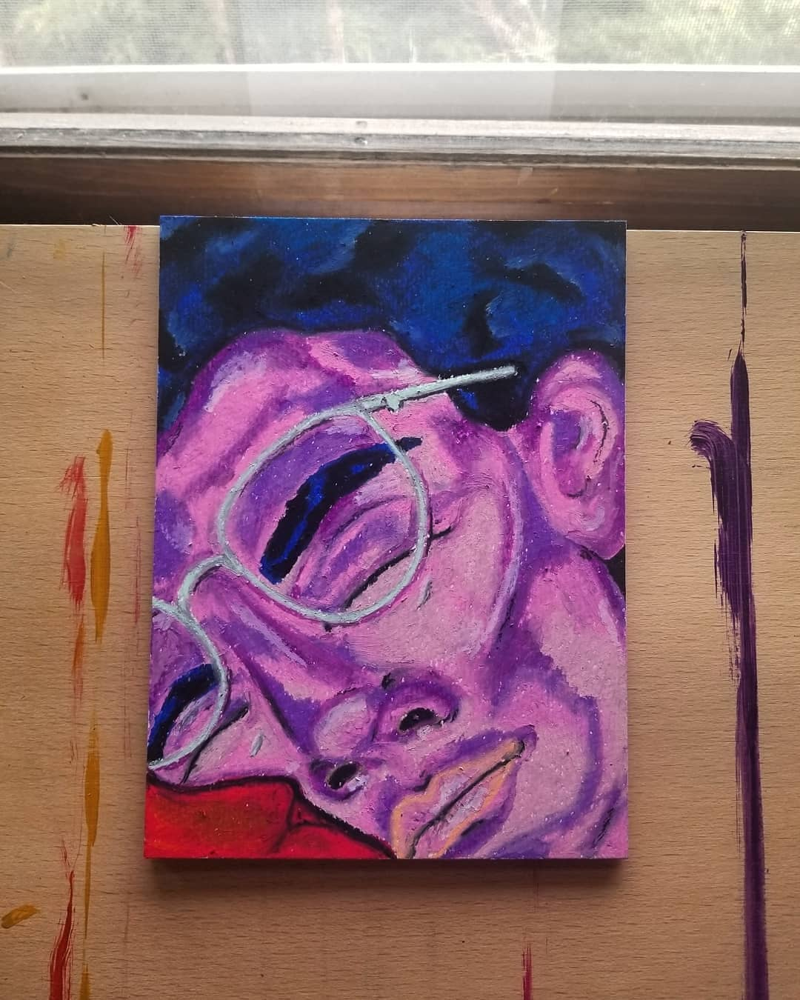
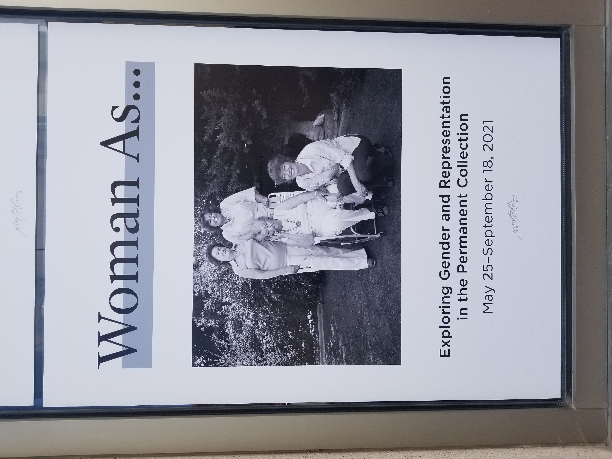
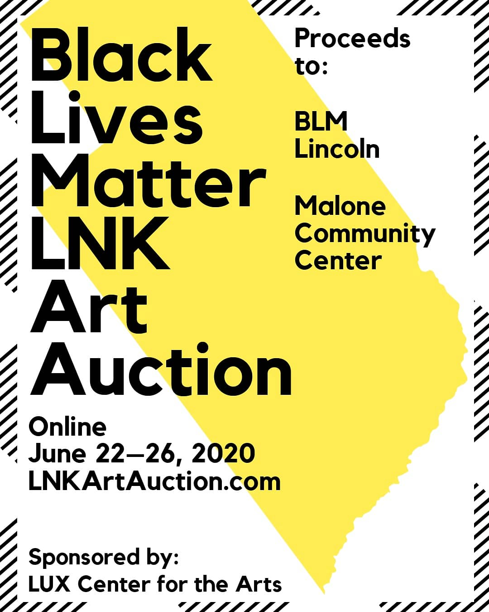

About
Hobbies
Hannah Ashburn

(Hannah Ashburn: Pastel Art)

(Hannah Ashburn: Curated Show)

(Hannah Ashburn: Philanthropy)
Accomplishments
Associate Artist Noyes Gallery
Participant for a Non Profit Art Auction
Participating Artist at Annual Garden Show
Curater For Great Plains Art Museum
Participating Artist Community Wide Art Show
Goals
Graduate Masters in Art History at University of Nebraska
Opening Independant Gallery Space
Participating in More Art Events
Curate for Larger Museums
Continue to Educate Self in more Art Skills